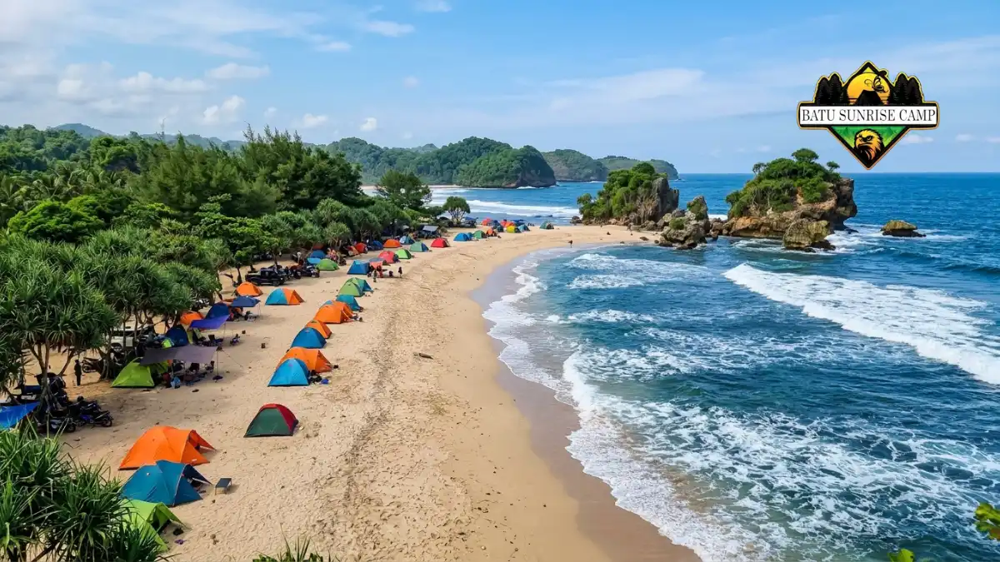

Lokasi pantai Malang Selatan untuk camping yang paling dikenal meliputi Balekambang, Goa Cina, Bajul Mati, dan Ngliyep, dengan akses lewat Jalur Lintas Selatan.
- Pesisir selatan Kabupaten Malang membentang di enam kecamatan dan memiliki banyak pantai dengan area datar untuk mendirikan tenda.
- Disparbud Kabupaten Malang mencatat sekitar 1,5 juta kunjungan wisata pantai Malang Selatan sepanjang 2025, sehingga akhir pekan dan libur panjang cenderung padat.
- Balekambang, Goa Cina, Bajul Mati, Ungapan, dan Ngliyep adalah pilihan yang paling sering dibahas media untuk camping.
- Biaya, aturan menginap, dan kondisi ombak berbeda di setiap pantai, jadi konfirmasi ke pengelola dan cek prakiraan BMKG sebelum berangkat.
- Keselamatan dan kebersihan menjadi syarat utama: dirikan tenda jauh dari garis air dan bawa pulang seluruh sampah.
Apa yang dimaksud dengan lokasi pantai Malang Selatan untuk camping?
Lokasi pantai Malang Selatan untuk camping adalah garis pesisir Kabupaten Malang yang memiliki area datar, akses kendaraan, fasilitas dasar, dan pengelola yang mengizinkan pengunjung bermalam.
Pesisir Kabupaten Malang membentang di enam kecamatan, yaitu Bantur, Donomulyo, Gedangan, Tirtoyudo, Sumbermanjing Wetan, dan Ampelgading. Kawasan ini dijuluki Malang seribu pantai karena deretan teluk, tebing karang, dan hamparan pasir putihnya.
Jalur Lintas Selatan (JLS) membuat banyak pantai di kawasan tersebut lebih mudah dijangkau, sehingga camping pantai menjadi pilihan akhir pekan yang populer bagi warga Malang Raya, Surabaya, dan sekitarnya.
Camping pantai cocok untuk pemula yang ingin merasakan suasana laut tanpa perjalanan jauh, untuk keluarga, untuk komunitas, dan untuk fotografer yang mengejar matahari terbit. Manfaatnya jelas: biaya relatif terjangkau, pemandangan terbuka, dan jadwal yang fleksibel.
Batasannya juga nyata, yaitu angin kencang, pasir yang mengganggu perlengkapan, keterbatasan air bersih, dan risiko ombak besar dari Samudra Hindia.
Data kunjungan menunjukkan betapa ramainya kawasan ini. Dinas Pariwisata dan Kebudayaan Kabupaten Malang melaporkan sekitar 1,5 juta wisatawan mengunjungi pantai Malang Selatan sepanjang 2025, sebagaimana dimuat dalam laporan kunjungan wisata pantai Malang Selatan di TIMES Indonesia.
Sementara itu, BPS Kabupaten Malang mencatat total 5.002.852 kunjungan wisatawan ke seluruh Kabupaten Malang pada 2025, terdiri atas 4.951.506 wisatawan nusantara dan 51.346 wisatawan mancanegara, menurut pemberitaan data BPS Kabupaten Malang tahun 2025.
Angka ini menandakan perlunya perencanaan matang, terutama untuk keberangkatan pada akhir pekan.
Pantai mana saja di Malang Selatan yang cocok untuk camping?
Pantai Malang Selatan yang sering dipilih untuk camping adalah Balekambang, Goa Cina, Bajul Mati, Ungapan, dan Ngliyep, masing-masing dengan karakter dan aturan berbeda.
Daftar berikut disusun dari pemberitaan media dan sumber publik. Kondisi lapangan, tarif, dan izin menginap dapat berubah, sehingga konfirmasi ke pengelola tetap diperlukan.
Pantai Balekambang
Pantai Balekambang terletak di Desa Srigonco, Kecamatan Bantur, sekitar 67 km ke selatan dari pusat Kota Malang.
Pantai ini dijuluki Tanah Lot versi Jawa Timur karena Pura Amarta Jati berdiri di pulau karang kecil dekat tepi pantai.
Media melaporkan tersedia warung makan, toilet, mushola, penyewaan tenda, dan area bermain anak.
Angka tiket masuk dalam berbagai laporan berbeda-beda, mulai Rp5.000 hingga Rp20.000 per orang, sedangkan tarif camping dilaporkan berkisar Rp20.000 hingga Rp25.000 per malam.
Pantai Goa Cina
Pantai Goa Cina berada di Desa Sitiarjo, Kecamatan Sumbermanjing Wetan, dan sebelumnya dikenal dengan nama Rowo Indah. Tiga pulau kecil, yaitu Pulau Bantengan, Pulau Goa Cina, dan Pulau Nyonya, menghiasi lautnya.
Pantai ini dilaporkan buka 24 jam, memiliki area camping yang luas, dan menyediakan pilihan glamping.
Namun ombaknya besar dan arus bawah lautnya kuat, sehingga camper sebaiknya tidak berenang di area tanpa pengawasan.

Area camping yang luas di Pantai Goa Cina dengan gugusan pulau karang dan deburan ombak khas pesisir Malang Selatan.
Pantai Bajul Mati dan Pantai Ungapan
Pantai Bajul Mati berjarak sekitar 72 km dari pusat Kota Malang dan berada dekat persimpangan menuju Sendang Biru. Namanya berasal dari pulau karang yang tampak seperti buaya diam. Suasananya dikenal lebih tenang dibanding pantai yang ramai pedagang.
Pantai Ungapan berada di antara Goa Cina dan Bajul Mati dan memiliki muara berair jernih yang sering dipakai bermain air. Ketiganya berdekatan, sehingga mudah digabung dalam satu perjalanan.
Pantai Ngliyep
Pantai Ngliyep berada di Desa Kedungsalam, Kecamatan Donomulyo, sekitar 63 km dari pusat Kota Malang. Pantai ini sudah lama menjadi ikon wisata Malang Selatan dan memberi kesan lega karena hamparannya luas, cocok untuk rombongan.
Di dekatnya terdapat bukit Gunung Kombang, yang biasa dipakai untuk menikmati matahari terbenam.
Sendang Biru, Tiga Warna, dan Pulau Sempu
Kawasan Sendang Biru dan Pantai Tiga Warna memiliki aturan kunjungan lebih ketat karena berada di kawasan konservasi.
Sejumlah media mencatat tarif reservasi Rp100.000 per rombongan dengan maksimal 10 orang untuk Tiga Warna.
Pulau Sempu dikenal sebagai kawasan cagar alam. Karena itu, periksa aturan resmi dan tanyakan langsung apakah menginap diizinkan sebelum menjadikan kawasan ini lokasi camping.
Bagaimana cara memilih lokasi camping pantai yang aman dan nyaman?
Pilih lokasi camping pantai berdasarkan lima faktor: akses jalan, fasilitas dasar, kondisi ombak, tingkat keramaian, dan kejelasan izin menginap dari pengelola setempat.
Pertama, akses jalan. Pastikan kendaraan Anda sanggup melewati rute menuju pantai, termasuk tanjakan dan jalan licin saat hujan. Panduan rute dan akses menuju pantai Malang Selatan untuk camping membantu Anda menghitung jarak dan waktu tempuh dari beberapa arah.
Kedua, fasilitas dasar. Toilet, mushola, warung, dan sumber air bersih sangat menentukan kenyamanan, terutama bagi keluarga dan anak-anak.
Ketiga, kondisi ombak. Pantai dengan teluk tertutup umumnya lebih tenang, tetapi tidak ada pantai Samudra Hindia yang bebas risiko.
Keempat, tingkat keramaian. Pantai yang ramai lebih aman karena banyak pengunjung dan petugas, sedangkan pantai sepi menawarkan ketenangan dengan risiko bantuan yang lebih lambat.
Kelima, izin menginap. Pengelola dapat mengatur zona tenda, jam tertentu, atau larangan menginap di area konservasi.
Kapan waktu terbaik camping di pantai Malang Selatan?
Waktu terbaik camping di pantai Malang Selatan umumnya musim kemarau, saat hujan berkurang, tetapi tinggi gelombang tetap harus dicek lewat prakiraan resmi BMKG sebelum berangkat.
BMKG Stasiun Meteorologi Juanda memprakirakan sekitar 56,9 persen wilayah Jawa Timur mulai memasuki musim kemarau pada Mei 2026, dan sekitar 75 persen wilayah diperkirakan memiliki hujan di bawah normal, menurut prakiraan musim kemarau 2026 Jawa Timur dari BMKG Juanda. Kondisi kering membantu tenda tetap nyaman, tetapi tidak menjamin laut tenang.
Peringatan dini BMKG pada 5 sampai 8 Maret 2026 menyebut gelombang 4 sampai 6 meter berpeluang terjadi di Samudra Hindia selatan Jawa Timur, seperti dimuat dalam peringatan dini tinggi gelombang BMKG Maret 2026. Artinya, gelombang tinggi bisa muncul di luar musim hujan.
Hari kerja umumnya lebih lengang daripada akhir pekan dan libur panjang. Pantai juga lebih nyaman dikunjungi dengan tiba sebelum sore agar tenda berdiri sebelum gelap.
Panduan keselamatan camping di pantai Malang Selatan merinci cara membaca prakiraan cuaca dan gelombang.
Berapa biaya camping di pantai Malang Selatan?
Biaya camping di pantai Malang Selatan umumnya terdiri dari tiket masuk, tarif bermalam, parkir, dan sewa tenda, dengan nominal yang berbeda di setiap pengelola.
Laporan media menyebut tiket masuk berada di kisaran Rp5.000 hingga Rp20.000 per orang dan tarif camping sekitar Rp10.000 hingga Rp25.000 per malam di sejumlah pantai.
Paket tenda siap pakai biasanya jauh lebih mahal karena sudah termasuk perlengkapan dan fasilitas tambahan.
Karena tarif dapat berubah, anggap angka tersebut sebagai gambaran awal. Rincian lengkap beserta contoh perhitungan tersedia dalam artikel biaya camping di pantai Malang Selatan.
Apa saja perlengkapan camping yang wajib dibawa ke pantai?
Perlengkapan wajib camping di pantai meliputi tenda tahan angin, pasak pasir, pelindung hujan, penerangan, air minum, dan kantong sampah untuk membawa pulang seluruh limbah.
Pasir pantai tidak menahan pasak biasa dengan baik. Gunakan pasak panjang atau pasak khusus pasir, dan tambahkan pemberat seperti kantong berisi pasir. Pilih tenda berflysheet dengan bukaan yang bisa menghadap menjauh dari arah angin.
Bawa pula matras, kantong tidur, senter atau headlamp, power bank, jas hujan, tabir surya, dan sandal. BMKG mengimbau penggunaan pelindung dari sinar matahari saat cuaca cerah dan panas.
Simpan ponsel dan dokumen di kantong kedap air karena uap laut dan pasir mudah merusak perangkat.
Untuk makan, bawa kompor kecil dan air bersih secukupnya. Beberapa pantai menjual makanan, tetapi ketersediaannya berubah-ubah menurut jam dan keramaian.
Apa kesalahan umum saat camping di pantai Malang Selatan?
Kesalahan umum camping di pantai Malang Selatan adalah mendirikan tenda terlalu dekat garis air, mengabaikan peringatan ombak, dan meninggalkan sampah di area perkemahan.
Kesalahan lain meliputi berenang saat malam atau saat ombak besar, tidak mengecek aturan menginap, dan membawa tenda biasa tanpa pemberat sehingga tenda tertiup angin.
Sebagian camper juga datang terlalu sore sehingga mendirikan tenda dalam gelap, padahal persiapan ini sebaiknya selesai sebelum matahari terbenam.
Kebersihan juga menjadi sorotan. Dinas Pariwisata dan Kebudayaan Kabupaten Malang telah menyoroti persoalan sampah di kawasan wisata pantai Malang Selatan.
Cara paling sederhana membantu adalah membawa kantong sampah sendiri dan mengangkut seluruhnya saat pulang.
Bagaimana perbandingan lokasi camping pantai Malang Selatan?
Balekambang unggul dalam fasilitas, Goa Cina dalam area camping luas, Bajul Mati dalam suasana tenang, dan Ngliyep dalam hamparan pantai lega untuk rombongan.
Perbandingan ini merangkum gambaran dari pemberitaan media dan bukan penilaian mutlak. Setiap pantai memiliki kelebihan dan batasan sendiri.
| Pantai | Jarak dari pusat Kota Malang | Karakter utama | Catatan |
|---|---|---|---|
| Balekambang | Sekitar 67 km | Fasilitas relatif lengkap, ikon pura | Cenderung ramai saat libur |
| Goa Cina | Sekitar 2 jam perjalanan | Area camping luas, pulau karang | Ombak besar dan arus kuat |
| Bajul Mati | Sekitar 72 km | Suasana lebih tenang | Ombak bisa sangat besar pada bulan tertentu |
| Ngliyep | Sekitar 63 km | Hamparan luas, dekat Gunung Kombang | Cocok untuk rombongan |
Jika Anda menginginkan fasilitas, Balekambang menjadi titik awal yang wajar. Jika Anda mencari ruang tenda yang lapang, Goa Cina layak dipertimbangkan. Jika Anda lebih suka ketenangan, Bajul Mati dan Ungapan bisa menjadi pilihan.
Bagaimana menjaga keselamatan dan kebersihan saat camping di pantai?
Jaga keselamatan dengan memantau peringatan gelombang BMKG, menjauhi air saat malam, dan jaga kebersihan dengan membawa pulang semua sampah dari area camping.
Pemerintah Kabupaten Malang melalui Disparbud menekankan pentingnya keselamatan pengunjung seiring meningkatnya kunjungan, seperti diberitakan dalam pemberitaan keselamatan pengunjung pantai Malang Selatan. Pantau prakiraan resmi lewat situs resmi BMKG sebelum dan selama perjalanan.
Pilih titik tenda di atas garis pasang dan jauh dari tebing rapuh. Beri tahu kerabat tentang lokasi dan rencana pulang Anda. Hindari berenang di luar area yang dijaga petugas. Panduan keselamatan camping di pantai Malang Selatan menjelaskan langkah lengkap, termasuk apa yang perlu dilakukan saat kondisi laut berubah.
Kesimpulan
Pilih pantai sesuai kebutuhan: Balekambang untuk fasilitas, Goa Cina untuk ruang tenda, Bajul Mati untuk ketenangan, dan Ngliyep untuk rombongan.
Cek tarif dan aturan menginap ke pengelola, pantau BMKG sebelum berangkat, dan siapkan perlengkapan tahan angin.
Rencanakan rute dengan rute dan akses pantai Malang Selatan untuk camping, hitung anggaran lewat rincian biaya camping pantai Malang Selatan, dan pastikan aman dengan tips keselamatan camping pantai Malang Selatan.

Pertanyaan Umum (FAQ)